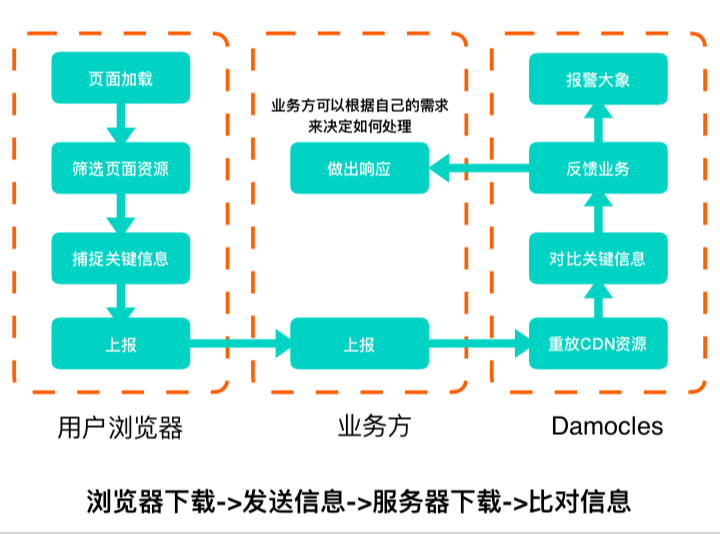

# 流量劫持
流量劫持主要分为：DNS 劫持，数据劫持。
# DNS 劫持
域名劫持是互联网攻击的一种方式，通过攻击 DNS 服务器，或伪造 DNS 服务器的方法，把目标网站域名解析到错误的地址让用户无法访问到真正的地址。
# DNS 是如何工作的
客户端访问服务端，首先要根据域名获取到对应的 IP 地址，这一步需要从 DNS 服务器上获取。请求 DNS 服务器时，会通过 UDP 协议在当地网络运营商提供的的公共域名服务器中查找 IP，如果没有找到，就会继续请求上一级的域名服务器来查找，直到返回 IP 地址为止。域名劫持，即是在请求 DNS 解析域名时出现问题，目标域名被恶意地解析到其他 IP 地址，造成用户无法正常使用服务。
为了减少 DNS 查询时间，HTTP 协议栈中会缓存域名解析：
- 浏览器可能会缓存域名解析。
- 用户系统中的域名映射表(Hosts)会缓存域名解析。
- 公共域名服务器通常由 ISP（互联网服务提供商）提供。
- 公共应服务器会缓存上一级域名服务器的结果。
- 公共域名服务器 TTL 到期后，会向顶级域名服务器获取信息。
# 如何污染 DNS
常见的污染 DNS 方式有：
- 篡改 Hosts 文件。
- 污染中间链路设备（路由器等）。
- 修改 UDP 内容，影响 DNS 查询结果。
- 入侵 DNS 服务器（攻击成本高）。
# 如何抵御 DNS 劫持
解决域名劫持的一个办法就是绕开安全性较差的 UDP 协议，通过一个可信的源头来解析域名，解析方式不需要拘泥于 UDP 协议，也可以通过 HTTP 的方式。
- DNS over HTTPS
- 在 TLS 协议之上传输 DNS 内容。
- DNS over HTTP
- 用 HTTP 协议来传输 DNS。
- DNS over HTTPS
- 用 HTTPS 协议来传输 DNS。
- 使用自己维护的 DNS 服务器（成本太大）。
# DNS 劫持总结
一般使用 http-dns 绕过运营商解析域名，达到防止 DNS 劫持的目的，一些大厂还可以自己维护权威域名服务器，防止劫持。
DNS 劫持是属于违法行为，已经被严厉打击，很少见了。
# 数据劫持
数据劫持基本针对明文传输的内容发生。用户发起 HTTP 请求，服务器返回页面内容时，经过中间的运营商网络，页面内容被篡改或加塞内容，强行插入弹窗或者广告。
# 如何抵御数据劫持
行业内解决的办法即是对内容进行 HTTPS 加密，实现密文传输，彻底避免劫持问题。MD5 校验同样能起到防止数据劫持的作用，MD5 校验是指内容返回前，应用层对返回的数据进行校验，生成校验值；同时，内容接收方接收到内容后，也对内容进行校验，同样生成校验值，将这两个校验值进行比对，倘若一致，则可以判断数据无劫持。
HTTPS 也能被运营商劫持
1、伪造证书，通过病毒或者其他方式将伪造证书的根证书安装在用户系统中（较少）。
2、代理也有客户的证书与私钥，或者客户端与代理认证的时候不校验合法性，即可通过代理来与我们服务端进行数据交互（较多）。
# Content-Security-Policy (CSP)
Content-Security-Policy 的实质就是白名单制度，开发者明确告诉客户端，哪些外部资源可以加载和执行，等同于提供白名单。它的实现和执行全部由浏览器完成，开发者只需提供配置。
- 指定每种资源类型可以加载执⾏的条件。
- 还可以防御 XSS 攻击。
- 也可以⽤于强迫资源使用 HTTPS 加载，降低劫持可能性。
两种方式开启 CSP：
// 通过 http 头信息 Content-Security-Policy: default-src https: // 通过 meta
标签 <meta http-equiv="Content-Security-Policy" content="default-src https:" />
2
缺点:
- 由于 CSP 标识本身存在于 HTML 标签或者 HTTP 请求头中，可以被攻击者可以直接移除掉。
- 规则⽐较复杂。
- 影响动态创建脚本的使⽤。
# Subresource Integrity (SRI)
Subresource Integrity 允许浏览器检查其获得的资源（例如从 CDN 获得的）是否被篡改的一项安全特性。
<script crossorigin="anonymous" integrity=“sha256-+Ec97...E=“ src=“https://a.com"></script>
缺点:
- 由于 SRI 标识 本身存在于 HTML 标签中，可以被攻击者可以直接移除掉。
- 影响动态创建脚本的使⽤。
- 校验失败时影响可⽤性。
- 兼容性有限，iOS Safari 不支持。
# HTTP Strict-Transport-Security
在 HTTPS 响应报文的头部中，增加一个名为Strict-Transport-Security（HSTS）的头，内容是这个头的有效期。当浏览器在 HTTPS 响应中看到它时，下一次浏览器会直接使用 HTTPS 来进行请求。
Strict-Transport-Security: max-age=<expire-time>
问题:
- 只有 HTTPS 的响应才会去识别 HSTS。
- ⽤户的第⼀次访问不受控。
# X-FRAME-OPTIONS
X-FRAME-OPTIONS 是一个 HTTP 响应头，在现代浏览器有一个很好的支持。网站可以使用此功能，来确保自己网站的内容没有被嵌到别人的网站中去，也从而避免了点击劫持的攻击。
该响应头有三个值可选，分别是：
- DENY，表示页面不允许通过 Iframe 的方式展示。
- SAMEORIGIN，表示页面可以在相同域名下通过 Iframe 的方式展示。
- ALLOW-FROM，表示页面可以在指定来源的 Iframe 中展示。
# 数据劫持总结
- 使用 CSP 限制外部 JS 文件加载。
- 使用 HTTPS 加密传输数据，确保内容保密。
- 使用 SRI 校验文件一致性。
- 使用 HSTS 强制用户使用 HTTPS 访问。
- 使用 X-Frame-Options 确保页面不被嵌入 Iframe。
以上方法都只能起到监控数据劫持作用，并不能对劫持后的页面进行修复。
# 现有方案
此方案参考了美团点评 2018 前端分享上的防治方案。
- ⽅案 A：在某些省份、地区⾃建监测站，定期抓取固定资源（资源太固定，监测站数量也远远不够）。
- ⽅案 B：业务⽅在⾃己的 HTML 中监听资源的 Error 事件（⽆法确认问题在于劫持，也可能只是普通的 JS 出错）。
- ⽅案 C：使⽤用第三⽅方企业服务进⾏监控（服务越多成本越⾼）。
- ⽅案 D：CSP、SRI（兼容性和灵活性差，⽆法进行⾃定义逻辑）。
上述方案可以看出，无论哪种方案，都有它的不足，于是搭建了下图的方案：

优势如下：
- 监控的级别是业务级甚至页面级，而不是某个固定的资源。
- 在业务方的 Node.js 中内置逻辑，给予了业务方自己进行降级和响应的能力。
- 监控层如果出现故障，不影响业务方的代码执行。
# 业务代码规范
1、在页面 DOM 中定义一个根元素 Root，所有的业务代码都在这里，页面渲染完毕后，直接清理掉非 Root 元素目录下的其他元素。
2、Script 标签打上自定义属性，页面渲染时，把没有打自定义属性的删掉。
3、MutationObserver 监听 DOM 插入，如果是非法 JS 或 HTML，则阻止。
4、将搜集到的错误进行上报。
- 上报是否被套在 Iframe。
- 上报是否有其他代码被插入。
- 上报被 CSP 屏蔽的外部链接。
- 附带上传客户端 UID 等。